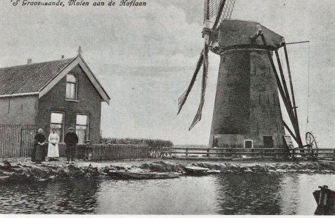
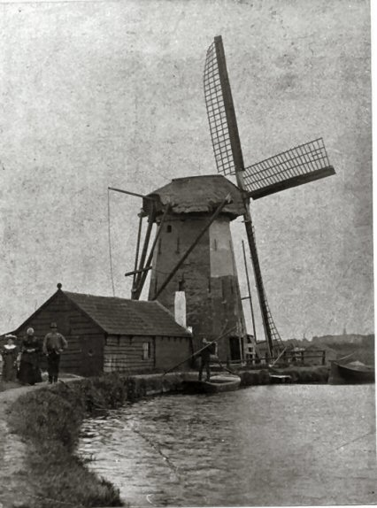

's-Gravenzande verdwenen molens

|
 Molen van de Poelpolder Op de voorgrond molenaar W. Nowee met zijn vrouw en dochtertje Jannetje, in het schuitje zijn zoon Joris. |
 Molen van de Poelpolder |
 Molen van de Poelpolder. Foto Peter Boogert |
 gebouwd 1718 (na te zijn afgebrand) Afgebroken en veranderd in electr. gemaal 1928 Met de molenaar en zijn echtgenote Willem Nowee Cornelia Nowee-Moor Nowee was molenaar van 1885 tot 1931 Foto Peter Boogert |
 Deze pagina is gemaakt op 28-3-2017: Tijd: 15:29 uur.
Deze pagina is gemaakt op 28-3-2017: Tijd: 15:29 uur.

Laatste wijziging:
Met dank aan: de
Hollandsche molen/Rob Pols/Hans Klok/Gerard Barendse
Erwin Esselink/Teun van der Sloot en Peter Boogertvoor het gebruik van de foto's